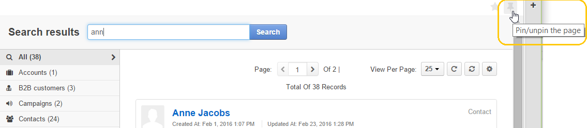
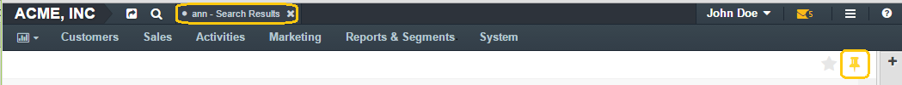
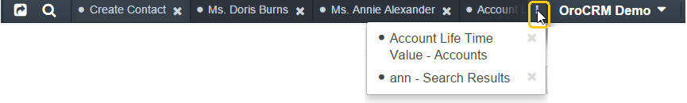

Pinbar¶
Pinning pages is a convenient tool that allows you to save a page and easily return to it. When you open a pinned page, it will look exactly as it did when you first pinned it.
Pins are particularly useful to:
- Save unfinished forms if you need to switch to another page or simply take a break in your work. All the information that was in the form at the moment you’ve pinned it will be preserved, even if you log out and then log in from another device.
- Save frequently used filtered grids and search results.
- Pin the most important records to keep an eye on them.
Pin a Page¶
You can pin a page to the header and come back to it at any time in one click. Some pages, such as Dashboards or Calendars, cannot be pinned.
To pin a page, click the pin icon in the top right corner of the page.
When you’ve pinned a page, the pin icon will turn yellow and a link to the page will appear in the pin bar at the top.
Click the link at any time to get to the page in its current state.
If you have a lot of pinned pages and they do not fit into the pinbar, click the three-dot icon to the right of the +pinbar to access hidden pins.
If someone else has edited the record you’ve pinned, it will appear yellow in the pin bar, indicating to you that changes were made.
Unpin a Page¶
To unpin a page, click the cross next to its name in the pinbar or the pin icon of a pinned page—it will turn grey again and the page will be unpinned.
Related Topics